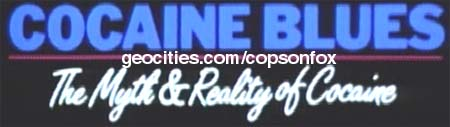

This show is where Cops was born and features a few minutes footage of police raids and interviews with cops in their cars that look just like they do on Cops even today, minus the early 80s police car.
Cast | Notes | My Summary
| Job | Person |
| Narrator/singer | Hoyt Axton |
| Musician | Frank Zappa |
| Deputy Chief Medical Examiner - Miami | Dr. Charles Wetli |
| Attorney | Howard Weitzman |
| Convicted cocaine dealer | Eugene "Mercury" Morris |
| Ear, nose & throat specialist | Dr. Joseph Sugerman |
| Author/satirist | Paul Kassner |
| Prof of Psychiatry UCLA | Dr. Sidney Cohen |
| Writer & director of Airplane | David Zucker |
| Writer & director of Airplane | Jerry Zucker |
| Writer & director of Airplane | Jim Abrahams |
| Deputy director Florida joint task force | Donald Roberts |
| US Customs | Frank Gomez |
| Medical expert | Dr. Barry Lieberman |
| Cocaine - the Mystique & the Reality | Joel Phillips |
| Director - Up Front | James Hall |
| Psychiatrist | Dr. Alan Brovar |
| Haight-Asbury Free Clinic | Dr. David Smith |
| Psychotherapist | Allan Rosenthal |
| Outpatient director Marlin ACT | Paul Ehrlish |
| Executive director community health project | Dr. Forest Tennant |
| Grace United Methodist Church | Rev Cecil Williams |
| University of California, Berkley | Prof Alan Dundes |
| Newsman (archive footage) | Bill Beutel |
| Newswoman (archive footage) | Barbara Walters |
The are many people who speak that are unnamed who do drugs or
are in prison.
Directed by Malcolm Barbour & John Langley
Written by John Langley
Music - Showballed Friend & No No Song by Hoyt Axton, Cocaine Blues by Butch Mudbone, Cocaine Man by Mark Keefner, Cocaine Line by David Dickey, The Price is High by Mickey Montgomery Band, One of these Girls by Zilch, Restless Tonight by Tears
Clips - Mystery of the Leaping Fish (1916), The Pace that kills (1928), Sinister Menace (1932), Cocaine Fiends (1938)
51 mins
Silent film footage to the "No No
Song" about cocaine. Announcer - Whole families are impoverished and they
are addicts. Without money for a burial the one alternative is the pit. Clip - I
can fix the headache. News footage - Bill Beutel, Barbara Walters and more about
cocaine busts. They are making every effort to stop it. It's a menace, it makes
you feel good like Christmas, a false feeling, jail time looking at 25-30. So
good you shouldn't try it. It's fun, entertaining. Frank Zappa - I think it's
absurd. It's nasty, the forbidden fruit.
Announcer - Coke comes from the leaves of the cocoa plant in
South America. Indians chew on it, it makes them forget their sorrows. Today
over 22 million are using it or have used it. Dr. Charles Wetli - There are
numerous methods for taking it, the most popular is snorting or swallowing,
mixed with alcohol, injected or smoked. You would be stunned who does it -
everyone. Man - I was introduced to it in Vietnam. You had to do it to make it
in college, I enjoy it in the morning, keeps me going. It's a nice high. If I
had some here I wouldn't be eating. It gives you a good buzz, it's all over the
place, but costs too much. I think it's better to drink alcohol. A band - I just
want to set the record straight. It has more buying power than gold or cash, run
into it constantly from the lowest level to top recording acts, if they aren't
involved they are liars.
In the past you'd see people at parties with drinks, now it's
coke. It's in the papers, talked about constantly, Belushi died of it, Pryor
burned up. Zappa - The media contributes to everything, in fact the media is
everything. All we have left is the image of reality. Howard Weitzman - I know
it's overdramatized especially when you have celebrity or sports figures
involved. Eugene "Mercury" Morris - I went from a small amount to
medium sized amount 2-3 grams a week which is nothing to a user, all the way up
to $4000 weekends. Girl - I always get turned onto it, never paid for it in my
life. Dr. Joseph Sugerman - I'm reminded of young woman, 18-20 who have
perforations in their nose the size of a quarter, they couldn't afford a habit
like that. Paul Kassner - There's a lot of women who wouldn't think of
themselves as whores, but are coke whores, they sleep with guys for coke.
Announcer - In 1886 Coca-Cola came out and had cocaine in it
for the first 20 years. Vin - a wine has coke in it and was endorsed by
everyone. It used to be in every patented medicine everywhere from dug stores to
Sears. When you couldn't get to it, it got to you. It came with a young country
to give an uplifting feeling and beating pain. It's the designer drug, the Gucci
drug, the image drug. The price is high for players. There's jewelry, coke
spoons, gold razors, they advertise it, but don't have needles hanging from them
like a junky. Dr. Sidney Cohen - In the last 6 years freebasing or smoking coke
is becoming more popular, 10% of all coke users are freebasing. Girl - I
remember the first time I did it was almost like someone stuck a needle in my
arm. I just turned 18 at the time, never heard of base, all I knew was when I
took a hit it was the most exhilarating, my whole body and mind feels completely
blurred, right on edge. If the pipe was ready and going I said forget it you
won't get me out of the house for a week. I think give me a line. Man - It's
great in a bar situation. I have a line, wanna get a hit? Come over get some
blow who knows what happens, could get 3 women. Girl - You get so much in your
system and that's all you have inside of you, if you want to destroy someone I
would give them an unlimited supply. Guy - You start coming down and you are a
new person and need another hit, then you take one and come back down, the pipe
talks to you. Former cocaine dealer - I rode to a party with a guy who brought a
substantial amount of coke and 5 academy award winners were there, models,
everyone was dearing and darling everyone to death. When they broke out the blow
in an alcove with Hollywood style lights, it was amazing. David Zucker, Jerry
Zucker, Jim Abrahams - Living in Hollywood we feel it hurts our chances if it
was known we didn't use. Dealer - It was like being paid to go out to scoop up
wine, but they did it with coke. Musician - It's easy to conceal. Cop - On a
burglary report one victim listed their stash of coke was stolen. Limo driver -
I don't let them freebase in the car, but if I didn't give them a toot I would
lose half my clients. New York New York Club - A woman says she's been drinking
since she was 14. Guy - Only the person who sells it benefits. Waitress - It's
just something to do, have a drink and a line. Guy - When you have a heavy load,
it lets you function well at a high altitude. Black Guy - When it comes to coke
everybody's white. Truck driver - Night time hours are the best, 2-6am where you
are out here for 2 days. You could roll your truck, every driver I know used it,
we have rolling pharmacies out there. Drivers don't sell it, but they'll talk on
the radio and trade a nose pack for smokes. Guy - They'll go down the road and
not care about it. Go down the highway now and ask if anyone's selling you'll
get 100 guys. If it's snowing it's going. Miami is the Mecca town of drugs, you
can go 19 blocks in any direction and find it. Old lady - We are so busy we
don't have anything to do with cocaine.
Guy on boat - That's why I went into it, on a business level.
Everyone around me was doing and buying so I thought it was a great way to make
money. I made a lot of money. Everyone uses, but it gets a bad name because of a
lot of the killings. Woman - You can get your throat cut. Guy - Not true.
Another guy - Everyone who uses or sells needs to go to jail.
The Harrison Narcotics act of 1914 made it a narcotic,
subject to penalties like heroin. A police raid looking for drugs with K9 is
seen. The government spends a billion a year in enforcement, 25% of prisoners
are serving for coke or drugs. Prisoner - I'm 26 and doing 2 ten year sentences
for selling coke. Most of the people I dealt to were 30-60 years old - business
owners. Undercover Narcotics officer - The typical user is your neighbor or
doctor. Prisoner - They are regular people like anyone else, probably wouldn't
recognize them sitting next you. UC - We've arrested people from all walks of
life. Dealer - There was a girl on the beach who kept giving me some and it was
wonderful. Ex-con - I wasn't a dealer, I was delivering. Prisoner - You could
make $24,000 a month in profits, could make $300,000 a year. Only way to make
money isn't to use, only to sell. Guy - I started to use, $10 a gram, then $300,
started to get expensive. I had to make deals to support my habit. Society looks
at users as partial victims and sealers as piranhas preying on society. My last
2 deals I got busted, a good snorter, lousy dealer. There isn't an evil stigma
until you get to court and it's the entire US vs. You. Girl - I was riding with
a guy, he got pulled over, had coke and I went to jail too. You are in a desert
by yourself and nobody cares. My only regret is when I first started my kids
were visiting me, now it's my grandkids. Whoever deals it will effect their kids
and grandkids. Hopefully I'll get out of it, it will ruin my future, I'm 21 and
don't need it pinned on me.
Man - The government is pursuing named persons. Ex-dealer -
They pursue athletes and more, I'm not the only victim. UC - There is a lot of
killing for profit and rip-offs. Prisoner - I've been knifed in the arm in South
America. Ex-dealer - I had a guy put a gun to the back of my neck. I've been
kidnapped many times. I thought I was going to die, it's better than jail. The
worst thing is getting ripped off by your friends. I would steal from a friend I
knew 25 years. There are no friends in coke world. Hypocrisy takes place in the
system all the time, lawyers and officials all use it. Lawyer - I practice in
the LA area and I'd say lot of my colleagues do it. It goes from military, to
judges to cops on the beat. Ex-dealer - The south Americans are involved,
everyone is involved in it. Many drugs in DEA cases disappear. The DEA sells it
to you and entices you, it's madness. 1980 security tape of a DEA coke dealer.
It's a sellers market. Ex-dealer - All the time I made 2-3 million not counting
expenses. Donald Roberts - In terms of business coke trafficking amounts to 35
billion out of 79 billion worth of all drug trafficking. Typically it comes from
Columbia, Peru and Bolivia. As far as enforcement it's a problem, very difficult
to detect. Coast guard Decisive footage of shooting at drug boats. They give
warning shots and fire into the vessel. They blow out the engine to stop them.
Frank Gomez - When a passenger arrives here they go to a
primary check. They do a document check of where they've been, what work they
did. They either let them get their luggage or ask additional questions. Customs
checks a man who says he's a writer/journalist, but has no papers. We had one
person who really did come into customs because someone died on a aircraft, a
swallower had 170 balloons ingested , each the size of a large marble. One broke
and he died instantly. Dr. Barry Lieberman - I know of 4 cases from chronic use
of coke, not from overdose or smuggling it in from the chronic repetitive usage.
You'll see people in their 20s dying from a heart attack. From every cocaine
induced death there are 15 or so where it is found. The usual victim is a 26
year old man who snorted or injected it. He'll go into grand mal seizures,
expire or die. If they use it heavily they get reverse tolerance and it effects
them when it was safe. Girl - I saw a guy literally turn blue and say to his
friends I turned blue I need help and was laughing. Another girl - A guy
freebased 24 days straight, his lungs collapsed, he froze and died. Guy - I
could freak people out shooting up. My friend died shooting up, bled out his
eyes and nose from someone putting battery acid in it. They show shooting up.
The taste is a rush. It hits your nose and mouth and it tastes good, then your
ears ring. I had a friend bounce off walls thinking it was going wrong.
If you are a person who is willing to go to excesses and deny
the dangers of it to feel good, it's always available, always a reliable feeling
that requires no other person for a relationship to be involved, it is there.
Girls - You never know what you are getting, you are taking a chance. Joel
Phillips - The majority of people who say they've done it haven't, they've done
watered down versions, not coke. James Hall - Many things are added to coke to
give it the effect they think it needs. It's harmful. It's hamburger helper,
gives it color and special effects. Dr. Alan Brovar - The sensations that are
very negative are perceived by the user to be positive. Ex-dealer - They test
them like Coke and Pepsi taste test with your nose and they don't know the
difference. When it gets to the street it's 20-25% of the real stuff. It' s what
they call a vasoconstrictor in blood, it constricts blood flow, diluted in
surgery it is very effective. What they see in the nose and throat is a
tourniquet, gangrene and dry rot. This is an x-ray of someone who snorted it and
developed an infection inside the nose, it was inhaled, fermented and infected.
The membranes are irritated, they are weeping, it's pus filled and looks like a
garbage heap. Girl - You can't let it grab you. Dealer - It is too good, you can
be anything. The reentry is harder than the takeoff, coming in there is a chance
of burning up like outer space, no chance gong up. It's a rollercoaster. Most of
the things you hear while stoned are bullshit. You burn coming down in reentry.
You have to take a six pack, a downer, a couple lines to balance it out. They
know the low can be fixed by a new line. After a run of a few days you come out
of it suicidal and depressed which means more coke. They are burning up to get
more and say they aren't addicted. The fourth trap is it exhausts the reward
centers of the brain, ordinary pleasures are no longer fun, only coke is left.
All your energies are focused on replacing this pile I have. My god I've got to
get some more and am calling everyone. It's not just another drug, it's very
unusual. A monkey will bar press for work of a coke reward. It will do it 1000s
of times and is dying, it prefers it over food. It prefers it to a meal and
water even though it is dying of thirst. This tells what humans see in coke, the
greatest reinforcement of all. The old definition was you had to wait for
withdrawal symptoms, but coke is very addictive. Man - I knew I was in trouble
when I went to my ex-wives house to watch the children so they could go out.
Want to play hide and go seek? They loved it. Go blind your eyes and daddy would
be sniffing. If you don't think that makes you feel really bad it does, it made
me go down on my knees and pray for help because I couldn't stop. Dr. - These
people by the time they get to me are forgetting names of objects, phone numbers
and dates. Forgetting yourself and friends is evidence of delusion. I got so
paranoid I wouldn't walk out the door if one person was around. You make
yourself like the groundhog who can't find his shadow and hides. I've had lots
of patients with coke abuse over the last 10 years. Dr. David Smith - We have a
large number of middle class people coming in for treatment for the abuse of
coke, if it's so benign how come they can't quit? Some are postal workers,
assembly workers, government, business people, poor people, have mental
problems, criminals, attorneys, housewives - whites especially, lots of
students, as young as 15 as old as 55. The aggressive successful industry type,
it transcends all. Allan Rosenthal - Close to 70% of the patients coming back
whose primary drug problem is coke. They are spending money and disrupting the
family. Paul Ehrlish - One woman we've been working with a couple years spent
$120,000 in one year, her whole inheritance. How much have I spent? Freebasing
was parallel to the arms race. One guy and her old man work full time and don't
have a time, there nose does. People lose their jobs. Savings and loans take
your homes. Coke is the fastest increasing drug there is. If you can do 1 line
god bless you I've never met anyone who can.
Announcer - There are rehabs across the country. They have a
specialized program to address the system. 3 components - lectures, nutrition
and purification, outpatient treatment, opiate treatment, cocaine anonymous and
care - quite unique in the country. You see all these movie stars quit and they
talk about on TV, but I bet they are back in 2 years. People slip back, but they
have to stop using. Everyone I knew did it. They have to get away from the coke
using friends. I have none of the friends I had before, few friends use drugs.
The coke user pays more for a high than anything else. What it does is make you
go fast, they get to 95 in first gear, it can go 195mph, but the limit is 55mph.
What's the point of having all this power and no place to go, that's coke. Zappa
- How cool can you be after sticking that uup your nose. They say they did it
once and their nasal passage looks like it's on fire. Man - I would sneeze
blood. Some don't believe they have a problem and we stick a tube from one side
to the other. The holes in the nose and increase in heart rate aren't as
important as what it does to the mind. Dr. Forest Tennant - At this time we
don't know specifically what it does to the brain. Based on animal and human
studies on a regular basis it depletes 12 of the brains major chemicals which
are used to transmit on neurons. We believe it's one the most devastating things
you can do we and have data to show it could be permanent.
Announcer - Why is it the fasted growing pleasure drug in
history, why the myth, why coke? Rev Cecil Williams - The culture is doing it,
there's a meaninglessness about it, they can't tie into things that make them
feel good and have to try for a way to make them give meaning. Girl - They do it
because they aren't happy with themselves. Zappa - The reasons why people do
coke are different than the other things they use to alter their state of being,
but basically it's because nobody likes who they are or what they are doing.
Prof Alan Dundes - The use of drugs is part of our modern dissatisfaction with
life and an escape. It fits our time, we want our pleasures now and we don't
want to work for it. It's extremely attractive, if you want you can get down the
road. Everything today is fast - food, cars, instant on for TV and they want
fast experiences and coke provides it. Part of the pleasure, like prohibition
and pot, is the excitement of doing something unlawful. Kid - If it was
legalized it would take the fun out of it. Ex-dealer - It's only illegal when
you get busted. They need to make laws to fit the crime and they aren't. If they
want to be consistent they would bust anyone with a mirror and razor. If they
legalized it the human race would go under, it's too much. It is a drug for the
future. If enough people in one place believe something that's power. If 72
million people believe in Islam and you go to that place Allah exists. In the
future coke will go away, the epidemic will go away, fade out and not exist. I
say that because 100 years ago there was a coke epidemic that went away, people
died and were ODing and society withdrew from it.
Song to shots of people using. "I've been drinking
whiskey and snorting that cocaine. I've got them cocaine blues." In the
narcotics section of the archives some of the headings to give you a taste -
narcotics law, anecdotes, (I stayed up once freebasing for 8 days), being
arrested (if you are criminal you get treated like one, but I'm not) folklore of
drug dealers (living out all the fantasies and thinking you are a big time
gangster), big section on folk speech (I can't tell you have a snort, snort 1
after a meal) adjectives denoting pleasantness (it's like floating, being on a
gentle rollercoaster) and how to become clean (Ready or not here I come, here
comes daddy blown away) and a section on injections (when you hear that buzz
you'll get it) One of the things in the folklore is a song turned in by a
student in 1974, I won't sing it. I heard it in upstate New York the 50s or 40s.
"Oh morphine Bill and cocaine Sue went strolling down the avenue, have a
snort on me." (It's overblown, it's a ridiculous concept, an illusion, it
makes people crazy) looking for a drugstore just past main, looking for a place
to buy cocaine, oh honey have a snort on me (I think it's a very sick drug, this
guy is like a zombie now, can't talk. I've had customers go down the tubes)
Looking for a drugstore painted green, looking for a place that sells morphine,
have a have a snort on me. In a graveyard on a hill lies a body of morphine
Bill, have a have snort on me. At his side lies the body of his cocaine bride,
honey have a have a snort on me."
Song - Last morning was when I saw your good friend, he spent
it all on comfort for his mind, you'd say you think he's blind, someone should
call his parents, or a sister or a brother will come and take him home on a bus,
it will always be a puzzle to his mother, he said he wanted heaven, but praying
was too slow so he bought a ticket on an airplane made of snow, can you see you
son flying low, dying slow, blinded by snow." to clips of all the people in
the film.
© 2008-09 Thrawn for Cops on Fox